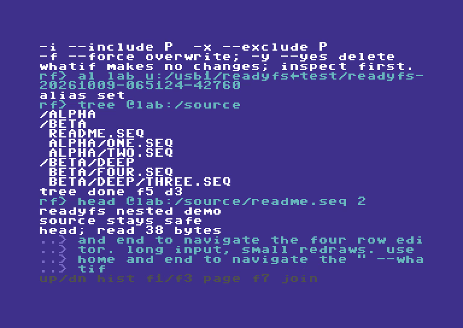
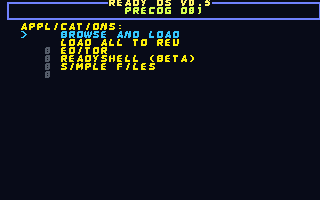

Ultimate Experiments
Outside ReadyOS—and sometimes before ReadyOS—we do random experiments for the Commodore 64 Ultimate. Some may become supported projects; some are one-offs and throwaways. Pick an experiment below for its guides, examples and downloads.
ReadyFS
ReadyFS aims to provide a full set of command-line tools and a coherent way to work with Ultimate DOS drives, mounted disk images or real C64 drives, SOFTIEC, and SD2IEC. That includes mounting disk images and accessing disk images on the Ultimate without mounting them, as if they were folders.

Explore ReadyFS · Illustrated guide · Screenshot walkthrough
ReuSQL64
ReuSQL64 explores a SQL-like database engine that keeps its data in a 512 KB–16 MB REU. Create tables, query and join rows, group and aggregate results, and use explicit indexes through a C64 shell or a reusable engine API.
CREATE TABLE NOTES (ID I16, BODY TEXT)
INSERT INTO NOTES VALUES (1, 'HELLO REU')
SELECT ID, BODY FROM NOTES
Explore ReuSQL64 · SQL language · Interactive shell
C77 Cyberpunk 77
A reconstructed dual-bank character ROM and Cyberpunk palette, explored across ReadyOS applications. Clean and CRT galleries show the same screens with different display treatments.
